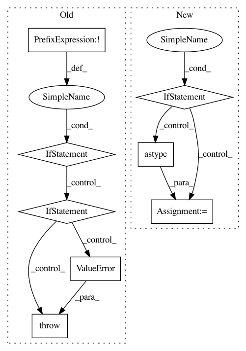

ca10c185d94470054d693f19e7691523dbe3ec55,skll/data/readers.py,NDJReader,_sub_read,#NDJReader#Any#,434
Before Change
line = line.strip()
// If this is a comment line or a blank line, move on
if line.startswith("//") or not line:
continue
// Process good lines
example = json.loads(line)
// Convert all IDs to strings initially,
// for consistency with csv and megam formats.
curr_id = str(example.get("id",
"EXAMPLE_{}".format(example_num)))
class_name = (safe_float(example["y"],
replace_dict=self.class_map)
if "y" in example else None)
example = example["x"]
if self.ids_to_floats:
try:
curr_id = float(curr_id)
except ValueError:
raise ValueError(("You set ids_to_floats to true, but" +
" ID {} could not be converted to " +
"float").format(curr_id))
yield curr_id, class_name, example
class MegaMReader(Reader):
After Change
// if it"s PY2 and `id` is in the
// data frame, make sure it"s a string
if PY2 and "id" in df:
df["id"] = df["id"].astype(str)
// convert the features to a
// list of dictionaries
features = df["x"].tolist()
return self._parse_dataframe(df,
"id" if "id" in df else None,
"y" if "y" in df else None,
In pattern: SUPERPATTERN
Frequency: 3
Non-data size: 8
Instances
Project Name: EducationalTestingService/skll
Commit Name: ca10c185d94470054d693f19e7691523dbe3ec55
Time: 2019-03-05
Author: jbiggs@ets.org
File Name: skll/data/readers.py
Class Name: NDJReader
Method Name: _sub_read
Project Name: dask/dask-ml
Commit Name: 68c9bab4a5c6821c2a4395763c676ba796406c49
Time: 2020-08-17
Author: TomAugspurger@users.noreply.github.com
File Name: dask_ml/preprocessing/_encoders.py
Class Name: OneHotEncoder
Method Name: _fit
Project Name: dask/dask-ml
Commit Name: 68c9bab4a5c6821c2a4395763c676ba796406c49
Time: 2020-08-17
Author: TomAugspurger@users.noreply.github.com
File Name: dask_ml/preprocessing/_encoders.py
Class Name: OneHotEncoder
Method Name: _transform